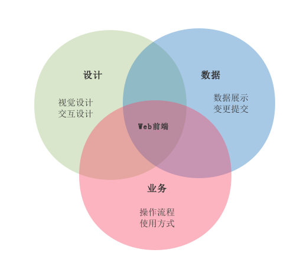

最直接的用户体验
快速迭代 + 准时发布
单个项目从启动到结束大约需要一个月
思路一: 前端只维护所有纯静态页面
思路二: 前端跟着项目走
思路三: 前端独立项目
| Value | Quantity | |
|---|---|---|
| Apples | $1 | 7 |
| Lemonade | $2 | 18 |
| Bread | $3 | 2 |
| 思路一 维护静态页 |
思路二 跟着项目走 |
思路三 独立成项目 |
|
|---|---|---|---|
| 项目更新速度 | |||
| 后端对接难度 | |||
| 开发效率 | |||
| 自动化程度 | |||
| 迁移成本 |
(def lazy-fib
(concat
[0 1]
((fn rfib [a b]
(lazy-cons (+ a b) (rfib b (+ a b)))) 0 1)))